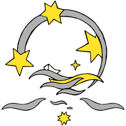

<nav *ngIf="type==='normal'" class="hlavni-navigace">

  <div class="header-left hidden-xs">

    <a [routerLink]="['/Home']">
      
    </a>

  </div>

  <div class="header-center clearfix">

    <div class="page-title">
      <a [routerLink]="['/Home']">
        Czech Atlantic Row
      </a>
    </div>
    <div class="odkazy">
      <ul>
        <li><a
          [routerLink]="['/Page', {key: 'navigace.o-ceste.key'|translate}]">{{'navigace.o-ceste.name'|translate}}</a>
        </li>
        <li><a
          [routerLink]="['/Page', {key: 'navigace.posadka.key'|translate}]">{{'navigace.posadka.name'|translate}}</a>
        </li>
        <li><a
          [routerLink]="['/Page', {key: 'navigace.veslice.key'|translate}]">{{'navigace.veslice.name'|translate}}</a>
        </li>
        <li><a [routerLink]="['/Blog']">{{'navigace.blog.name'|translate}}</a>
        </li>
        <li><a
          [routerLink]="['/Page', {key: 'navigace.partneri.key'|translate}]">{{'navigace.partneri.name'|translate}}</a>
        </li>
        <li><a
          [routerLink]="['/Page', {key: 'navigace.podporte-nas.key'|translate}]">{{'navigace.podporte-nas.name'|translate}}</a>
        </li>
      </ul>
      <ul class="jazyky">
        <li>
          <a (click)="changeLanguage('en')" class="english">switch to
            english</a>
        </li>
        <li>
          <!--<a [routerLink]="['/Home']" class="czech">přepnout do češtiny</a>-->
        </li>
      </ul>
    </div>

  </div>


  <div class="header-right hidden-xs">

    <ul class="jazyky">
      <li><a (click)="changeLanguage('en')" class="english"></a></li>
      <li><a (click)="changeLanguage('cs')" class="czech"></a></li>
      <li><a href="https://fb.me/CzechAtlanticRow" class="facebook"></a></li>
    </ul>

  </div>

</nav>


<!-- Navigace pro úvodní stránku webu. -->

<nav *ngIf="type==='logo'" class="logo-navigace">
  <div class="container">

    <navigation-star-component
      linkKey="posadka"
      [routerLink]="['/Page', {key: 'posadka'}]"></navigation-star-component>
    <navigation-star-component
      linkKey="partneri"
      [routerLink]="['/Page', {key: 'partneri'}]"></navigation-star-component>
    <navigation-star-component
      linkKey="veslice"
      [routerLink]="['/Page', {key: 'veslice'}]"></navigation-star-component>
    <navigation-star-component
      linkKey="blog"
      [routerLink]="['/Blog']"></navigation-star-component>
    <navigation-star-component
      linkKey="podporte-nas"
      [routerLink]="['/Page', {key: 'podporte-nas'}]"></navigation-star-component>
    <navigation-star-component
      linkKey="o-ceste"
      [routerLink]="['/Page', {key: 'o-ceste'}]"></navigation-star-component>
  </div>
</nav>

